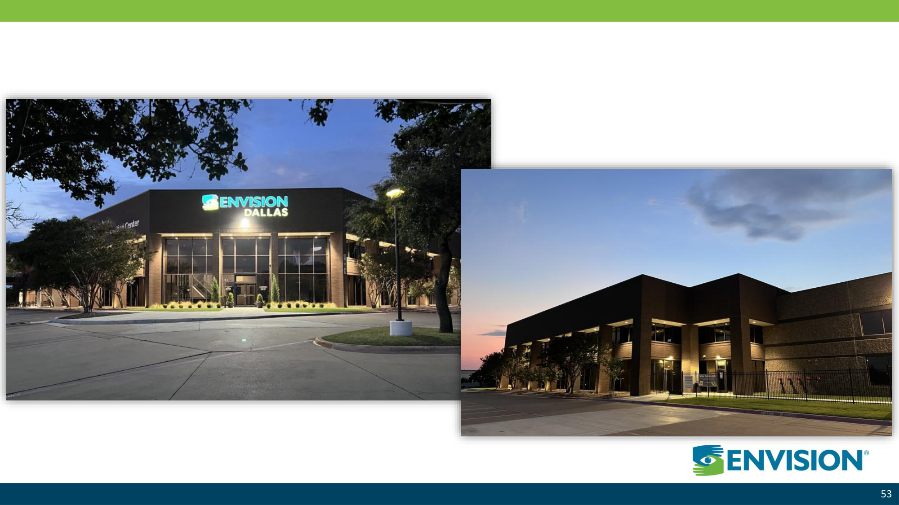
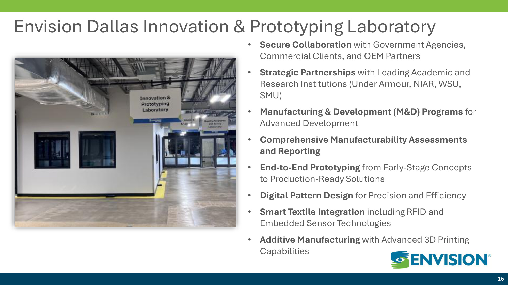
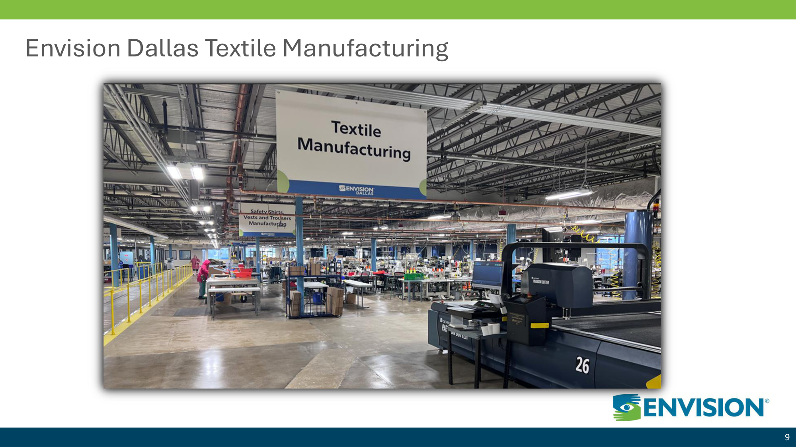
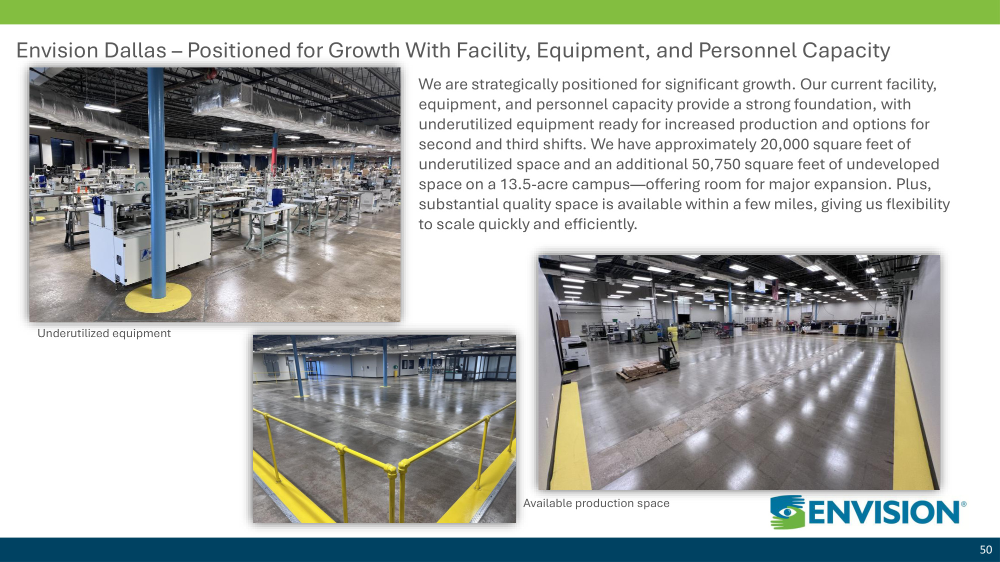

Partnering to Accelerate Development and Transition

Context
Increasing demand for advanced textile systems in defense applications
Government funding exists to support innovation in this space
Gap between research and scalable production
6+
Active Government Funding Vehicles
Spanning R&D through full-scale production
2 / 12
Funding Landscape Overview
Research & Early Development
DEVCOM ARL BAA (W911NF-23-S-0001)
Soldier Center BAA (W911QY-25-R-0023)
DEPSCoR
CRADA
Innovation Programs
SBIR
STTR
Army xTech / xTechSearch
Army xTech Soldier Lethality
Rapid Prototyping
OTA — NAC
MCDC
DIBC
DIU CSO
Scale & Manufacturing
AFFOA
Manufacturing USA Institutes
Defense Production Act Title III
3 / 12
Key Funding Pathways
BAA
Open solicitation for research and early-stage development in advanced materials and soldier systems. Solicitations: W911NF-23-S-0001 (ARL) and W911QY-25-R-0023 (Soldier Center)
SBIR / STTR
Small business-led innovation; nonprofits eligible as subcontractors, research partners, and testing laboratories
OTA
Rapid prototyping and transition through consortium membership; no FAR requirements; fastest path from concept to fielding
AFFOA / DPA Title III
Manufacturing scale-up and industrial base investment; supports transition from prototype to production-ready systems
4 / 12
How Projects Progress
R&D
BAA · DEPSCoR
Prototype
SBIR/STTR · OTA
Testing
OTA · CRADA
Scale
AFFOA · DPA III
Production
5 / 12
Key Innovation Areas Being Funded
Advanced Fibers & Yarns
Smart Fabrics / E-Textiles
Protective Textile Materials
Thermal Management
Antimicrobial Textiles
Wearable Technologies
6 / 12
Organization A: Material Innovation
Advanced material development and performance-driven design
Research and innovation capabilities in functional and technical textiles
Established R&D infrastructure with government and academic partnerships

Innovation & Prototyping Laboratory
7 / 12
Organization B: Manufacturing & Transition
Prototyping and cut & sew capabilities for government garment systems
Integration of advanced materials into production-ready textile systems
Small batch manufacturing and rapid iteration — MOQ-flexible
Transition partner for scalable DoD production: Berry compliant, ISO 9001:2015, DCMA authorized
90+ years domestic manufacturing; existing DoD production history including ACU trousers, ETOOL pouches, and Cold Weather Hand Warmers

Envision Dallas — Textile Manufacturing

Facility — Available Capacity
8 / 12
Combined Value
Material + Manufacturing
Advanced material innovation integrated with proven Berry-compliant production capability
Faster Transition
Reduced time from prototype to deployable system through coordinated teaming structure
Funded Opportunity Access
Combined eligibility to pursue BAA, OTA, SBIR/STTR, and consortium programs together
9 / 12
Example Opportunity Area
Protective / bio-chemical garment systems (DEVCOM bio/chem program area)
Early-stage exploration only — no program details defined; this is a first dialogue
Potential fit within MCDC OTA (Medical CBRN Defense Consortium) — focus: chemical/biological protective materials
This represents one illustrative area only. No product, design, or solution is proposed or implied.
Relevant Pathway: MCDC OTA
Focus: Protective / CB Materials
Stage: Early Exploration
10 / 12
Engagement Approach
1
Identify
Align on opportunity areas within active funding vehicles
2
Select
Choose appropriate funding pathway and consortium entry point
3
Structure
Define team roles, responsibilities, and teaming agreement terms
4
Pursue
Submit collaboratively and execute funded opportunities together
11 / 12
Next Steps
Align on specific areas of interest and mutual capability fit
Identify near-term funded opportunities to pursue together
Explore teaming agreement structure and formalize partnership